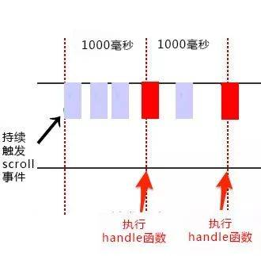

原文连接:https://www.cnblogs.com/xiao-yaolx/p/12101939.html
今天在改一个看似很简单以前也经常遇到的一个bug发现了很多问题。
实际结果肯定没有想象的那么简单。所以我想总结一下：保证下次不会踩坑。
---
业务场景是点击一个按钮，会产生一个弹框。重复快速的点击多次，会产生多个弹框。
那么这个问题该怎么解决呢？
1. 函数防抖节流
这两个东西我不知道看过了多少文档，可到现在掌握的还是不够好。
所以今天我想趁热打铁一波，把他们彻彻底底给搞明白！
防抖：什么是防抖呢？ 就是比如你规定一段延时 时间，在这段时间内你持续触发这个事件，事件处理函数才会执行一次，如果设定的时间到来之前，你又触发了一次事件，就重新开始延时。 来个图更加形象！

//接着肯定就是实现防抖的代码了
//防抖
function debounce(fn,wait) {
var timeout = null;
return function() {
if(timeout !== null) clearTimeout(timeout)
timeout = setTimeout(fn,wait)
}
}
//处理函数
function handle() {
console.log(Math.random())
}
//滚动事件
window.addEventListener('scroll',debounce(handle,1000))当持续触发scroll事件时，事件处理函数handle只在停止滚动1000毫秒之后才会调用一次，也就是说在持续触发scroll事件的过程中，事件处理函数handle一直没有执行。
节流：那么什么是节流呢？认识了防抖之后一定不要混淆了节流的概念，我之前就是犯这个错误。
言归正传，节流就是当你持续触发事件时，保证一段时间内只调用一次事件的处理函数，通俗点说就比如我们水龙头放水，阀门一打开，水哗哗的往下流，秉着勤俭节约的优良传统美德，我们要把水龙头关小点，最好是如我们心意按照一定规律在某个时间间隔内一滴一滴的往下滴。如下图，持续触发scroll事件时，并不立即执行handle函数，每隔1000毫秒才会执行一次handle函数。

函数节流主要有两种实现方法：时间戳和定时器。接下来分别用两种方法实现throttle~
//节流函数（时间戳）
function throttle(fn, delay) {
//记录第一次执行时的时间
var prev = Date.now()
return function() {
var contxt = this
var args = arguments
var now = Date.now()
//如果当前时间减去上一次执行的时间大于等于延时时间
if(now -prev >= delay) {
//执行
fn.apply(contxt, args)
//执行后的时间
prev = Date.now()
}
}
}
//处理函数
function handle() {
console.log(Math.random())
}
//滚动事件
window.addEventListener('scroll',throttle(handle,1000))
```
```javascript
//节流函数（定时器）
function throttle(fn, delay) {
var timer = null
return function() {
var contxt = this
var args = arguments
//如果定时器不存在
if(!timer) {
timer = setTimeout(function(){
fn.apply(contxt,args)
timer = null
},delay)
}
}
}
//处理函数
function handle() {
console.log(Math.random())
}
//滚动事件
window.addEventListener('scroll',throttle(handle,1000)) 当触发事件的时候，我们设置一个定时器，再次触发事件的时候，如果定时器存在，就不执行，直到delay时间后，定时器执行执行函数，并且清空定时器，这样就可以设置下个定时器。当第一次触发事件时，不会立即执行函数，而是在delay秒后才执行。而后再怎么频繁触发事件，也都是每delay时间才执行一次。当最后一次停止触发后，由于定时器的delay延迟，可能还会执行一次函数。
节流中用时间戳或定时器都是可以的。更精确地，可以用时间戳+定时器，当第一次触发事件时马上执行事件处理函数，最后一次触发事件后也还会执行一次事件处理函数。
// 节流throttle代码（时间戳+定时器）：
var throttle = function(func, delay) {
var timer = null;
var startTime = Date.now();
return function() {
var curTime = Date.now();
var remaining = delay - (curTime - startTime);
var context = this;
var args = arguments;
clearTimeout(timer);
if (remaining <= 0) {
func.apply(context, args);
startTime = Date.now();
} else {
timer = setTimeout(func, remaining);
}
}
}
function handle() {
console.log(Math.random());
}
window.addEventListener('scroll', throttle(handle, 1000));总结：
函数防抖：将几次操作合并为一此操作进行。原理是维护一个计时器，规定在delay时间后触发函数，但是在delay时间内再次触发的话，就会取消之前的计时器而重新设置。这样一来，只有最后一次操作能被触发。
函数节流：使得一定时间内只触发一次函数。原理是通过判断是否到达一定时间来触发函数。
区别： 函数节流不管事件触发有多频繁，都会保证在规定时间内一定会执行一次真正的事件处理函数，而函数防抖只是在最后一次事件后才触发一次函数。 比如在页面的无限加载场景下，我们需要用户在滚动页面时，每隔一段时间发一次 Ajax 请求，而不是在用户停下滚动页面操作时才去请求数据。这样的场景，就适合用节流技术来实现。
今天本想用其中一种方法解决我前面提到的业务场景，可万万没想到的是，两种方法我试了，都不行，可能是微信小程序的机制和PC端不同的缘故吧，所以最后 我采用了遮罩层的方法实现。
就是在他第一次点击的时候就设置一个遮罩层，不让他点击了，不就成功解决了这个问题了么？？？